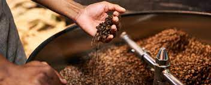

saveurs de monde
Le berceau du café abrite une grande variété de café, peut-être des milliers, des cafés sauvages et d'autres non répértoriés. La majorité des pays africains traitent leur café par voie humide ou lavée, alors que l'Ethiopie tire son épingle du jeu en produisant des cafés naturels, voie sèche. Ces cafés natures ont des saveurs lourdes et fruitées avec une acidité présente. Les cafés lavés éthiopien donnent une tasse claire similaire au thé, aux notes florales.
En savoir + downloadune fabrication d'exception
la recolte du cafe
La récolte du café La récolte des grains de café vert dépend de la floraison qui dure plusieurs jours. Il faut neuf à onze mois au Robusta et six à huit mois à l’Arabica pour passer de la fleur au fruit mûr. L’ovaire de la fleur fertilisée se transforme en fruit, initialement de couleur verte, puis jaune vif et ensuite rouge.
la torefaction
La torréfaction de nos cafés haut de gamme est effectuée sur un Torréfacteur Samiac 3kg. Ce " petit" torréfacteur, nous permet d'avoir une carte de café assez large et nous impose de Torréfié régulièrement (3 kg par broche et par référence au maximum). Cela nous permet d'avoir une grande réactivité et du café toujours fraîchement torréfié.
nos produits
Les cafés d'Assie
LAsie commence à produire des cafés remarquables malgrés la mauvaise réputation qu'on lui donnait avec sa grosse production de Robusta.
En savoir +Les cafés d'Amérique
Les cafés d'Amérique sont connus pour leur corps léger à moyen, assez équilibrés avec une acidité pétillante et vive.
En savoir +Les cafés d'afrique
L'Afrique est sûrement le continent producteur de café le plus excitant au monde, avec une variété, une histoire et une qualité incroyables...
En savoir +nos équipes
Notre gérante

Notre web designer
Notre comptable